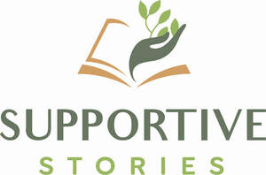

Trade Mark Journal No.2025/027 4 July 2025
UK00004216125 9 June 2025 (9,16,35,41,44,45)

- Class 9
- E-books; Downloadable PDFs and resources; downloadable digital content and audio files; Downloadable electronic publications; Downloadable podcasts; Downloadable educational course materials; Downloadable multimedia files.
- Class 16
- Printed educational materials; Books; Manuals.
- Class 35
- Business consultations; Online business management; Administrative support; Recruitment and onboarding; Project management; Business administration; Office functions; Business consultancy; Online business management; Human resources management; Staff recruitment; Business project management; Outsourcing services; administration services for medical referrals; Business assistance; Business administration assistance; Outsourcing services [business assistance].
- Class 41
- Parenting workshops; Business coaching; Leadership consultancy; Educational resources (courses, e-books); Podcasts; Training for families and professionals; Educational services; Business training services; Coaching (training); Workshops (education); Online publication of e-books and training materials; Providing online courses; Podcasts (non-downloadable); Educational consultancy.
- Class 44
- Medical and Therapeutic Services for family support services; Mental health-related advice; Psychological counselling; Advisory services relating to mental health; Health and wellness consultancy; Behavioural analysis for families; Support services for neurodivergent individuals; Parental support services.
- Class 45
- Provision of emotional support to families; Providing emotional support to patients and their families via interactive online forums; Providing support services for families navigating neurodivergent diagnoses and special educational needs; Providing support for understanding behaviour by helping parents understand the needs behind their children's behaviours.
Lucy Oldershaw
Representative: The Trademark Helpline